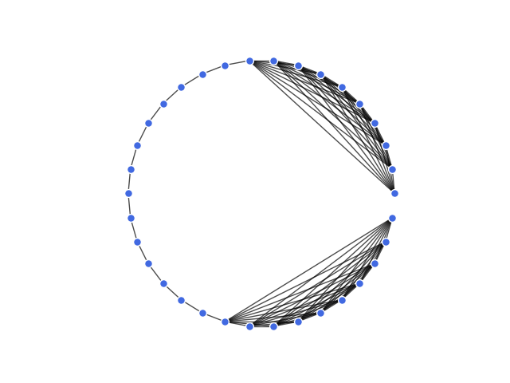

GraVE Documentation¶
import networkx as nx
import matplotlib.pyplot as plt
toy_network = nx.barbell_graph(10, 14)
node_options = {
'node_color': 'royalblue',
'node_size': 50,
'edgecolors': 'white',
}
edge_options = {
'line_color': 'grey',
'alpha': 0.7,
}
pos = nx.circular_layout(toy_network)
nx.draw_networkx_nodes(toy_network, pos, **node_options)
nx.draw_networkx_edges(toy_network, pos, **edge_options)
plt.axes().set_aspect('equal')
plt.axis('off')
Total running time of the script: ( 0 minutes 0.029 seconds)